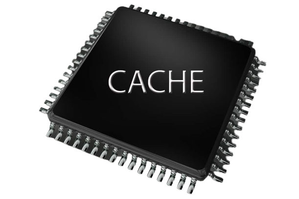

cache memory is a very high speed semiconductor memory in the modeorn days, it is located or integred directly with the CPU chip. it is faster than the main memory that RAM. the CPU can access it more quickly than the main memory because it is directly integrad with cpu and looks the cache first to get data and instructions.it also play the role of buffer between the CPU and main memory. cache memory holds the data and programs which are most frequently used by the cpu . so it makes sure that the data is instantly availablel for cpu whenever the cpu needs . in the other word, if the cpu finds the data or instructions in the cache memory it doesnt need to access the primary memory that is random access memory.
